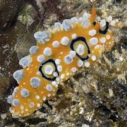
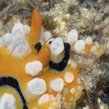
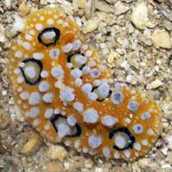
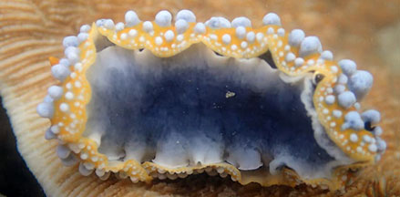

|
|
| nudibranchs text index | photo index |
| Phylum Mollusca > Class Gastropoda > sea slugs > Order Nudibranchia > Family Phyllidiidae |
| Eyed
phyllid nudibranch Phyllidia ocellata Family Phyllidiidae updated May 2020 Where seen? This stunning nudibranch with 'eyes' on its back is sometimes seen, on our Southern shores, on coral rubble and reefs. Features: About 5cm long. Body long, hard with white bumps on a yellow body. Some of the white bumps have dark circles so they look like big eyes. The rhinophores are yellow too. The literally eye-popping colours and design warn predators of its unpleasant nature. When disturbed, noxious secretions appear from the bumps. |
|
 Pulau Jong, Aug 06 |
 |
 Pulau Jong, Aug 06 |
| Eyed phyllid nudibranchs on Singapore shores |
On wildsingapore
flickr
|
| Other sightings on Singapore shores |
 |
Links
|